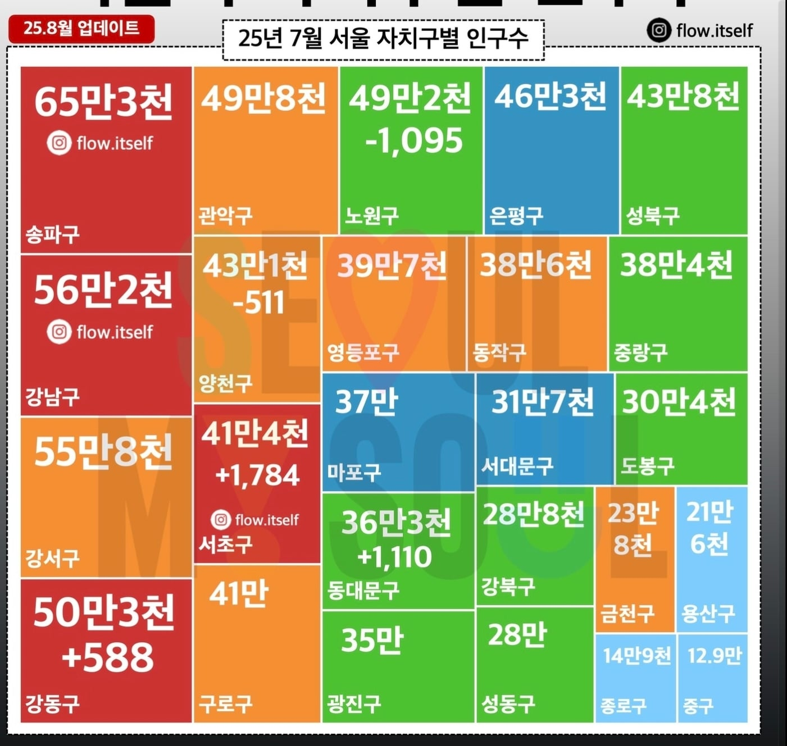

지금으로 따지면 서울시의 구인구 하나를 통째로 묻겠다는건데
아무리 그래도 그 인구 전체를 저 시대에 구덩이파서 넣으려면 년단위가 걸릴듯

지금으로 따지면 서울시의 구인구 하나를 통째로 묻겠다는건데
아무리 그래도 그 인구 전체를 저 시대에 구덩이파서 넣으려면 년단위가 걸릴듯
당시 세계 인구가 동아시아에 몰려있다고 하고
1~1.5억명 정도 있다고 했으니까 40만이 아니라1/10인 4만명 정도여도 진짜 어마어마하게 조진거임 비율로 치면 나라 하나 인구의 1/100이상을 조짐
백기 올려
호왈이라고 하기엔 113만 3천 8백명이라는 식으로 백단위까지 적혀있어서 어떤데서는 평양직공한 30만 5천이 진짜 전투부대라고 해석하기도 하더라.. 24군 편제(1군당 대충 3~4만) 가 명확하게 적혀있기도 하고.
전투부대 100% 다 긁어보낼리는 없으니 그거 얹고 수십만 더 있지 않을까? 하기도 하고